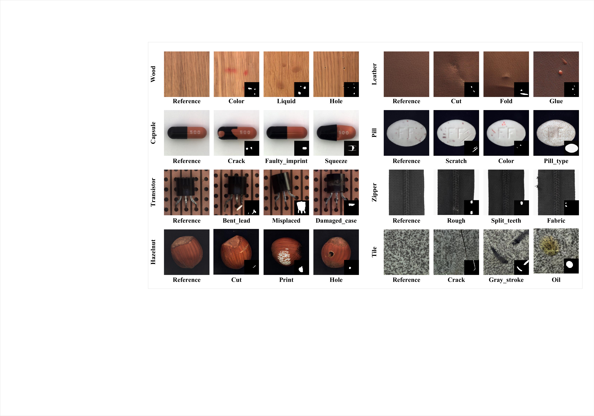
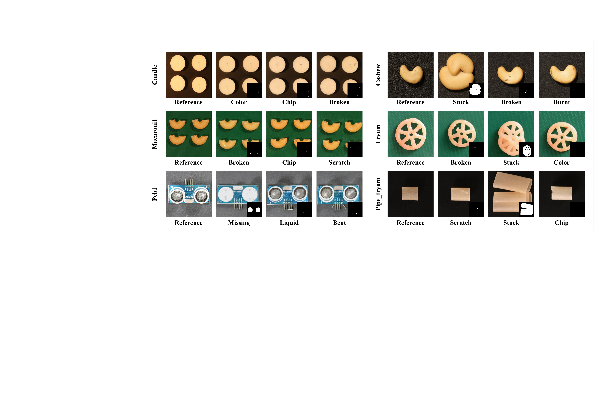

This page presents more quantitative and qualitative results from DefectComposer.
Detection
| Category | DRAEM | PRN | DFMGAN | AnoDiff | DefectDiffu | DualAnoDiff | Ours | ||||||||||||||
|---|---|---|---|---|---|---|---|---|---|---|---|---|---|---|---|---|---|---|---|---|---|
| AUC | AP | F1-max | AUC | AP | F1-max | AUC | AP | F1-max | AUC | AP | F1-max | AUC | AP | F1-max | AUC | AP | F1-max | AUC | AP | F1-max | |
| MVTec | 94.6 | 97.0 | 94.4 | 91.6 | 96.6 | 92.4 | 87.2 | 94.8 | 94.7 | 99.2 | 99.7 | 98.7 | 99.2 | 99.2 | 98.4 | 98.2 | 98.9 | 97.1 | 99.3 | 99.5 | 98.7 |
| VisA | 86.5 | 84.4 | 80.2 | 88.2 | 86.8 | 82.3 | 86.3 | 86.5 | 81.4 | 91.5 | 92.1 | 86.3 | 94.8 | 95.6 | 89.4 | 95.5 | 96.0 | 90.3 | 96.2 | 96.6 | 91.5 |
| FSSD-12 | 93.6 | 96.5 | 93.3 | 91.9 | 95.1 | 90.8 | 90.2 | 94.8 | 93.0 | 97.9 | 99.6 | 99.0 | 99.1 | 99.2 | 98.9 | 99.2 | 99.5 | 98.3 | 99.5 | 99.6 | 99.1 |
| MTD | 88.4 | 88.9 | 86.7 | 87.1 | 87.4 | 89.7 | 85.5 | 85.6 | 87.1 | 97.3 | 97.7 | 97.2 | 98.2 | 98.5 | 97.5 | 98.0 | 98.2 | 96.9 | 98.4 | 98.8 | 97.4 |
Classification
| Category | Crop-Paste | DFMGAN | AnoDiff | DefectDiffu | DualAnoDiff | Ours |
|---|---|---|---|---|---|---|
| bottle | 52.71 | 56.59 | 90.70 | 78.96 | 79.07 | 81.53 |
| cable | 32.81 | 45.31 | 67.19 | 79.23 | 78.12 | 79.45 |
| capsule | 32.89 | 37.23 | 66.67 | 72.57 | 70.67 | 74.45 |
| carpet | 27.96 | 47.31 | 58.06 | 80.98 | 79.03 | 82.06 |
| grid | 28.33 | 40.83 | 42.50 | 78.34 | 80.00 | 79.57 |
| hazelnut | 59.03 | 81.94 | 85.42 | 86.52 | 89.58 | 90.32 |
| leather | 34.39 | 49.73 | 61.90 | 88.67 | 90.48 | 91.76 |
| metalnut | 59.89 | 64.58 | 59.38 | 86.75 | 89.06 | 89.47 |
| pill | 26.74 | 29.52 | 59.38 | 60.41 | 56.25 | 60.45 |
| screw | 28.81 | 37.45 | 48.15 | 68.94 | 70.37 | 69.98 |
| tile | 68.42 | 74.85 | 84.21 | 96.46 | 100.00 | 99.76 |
| transistor | 41.67 | 52.38 | 60.71 | 73.45 | 71.43 | 74.56 |
| wood | 47.62 | 49.21 | 71.43 | 83.68 | 85.71 | 86.24 |
| zipper | 26.42 | 27.64 | 69.51 | 76.32 | 75.61 | 77.20 |
| Average | 40.55 | 49.61 | 66.09 | 79.38 | 79.67 | 81.20 |
Ablation
| Category | Ours | w/o ℒspa | w/o ℒm | ||||||
|---|---|---|---|---|---|---|---|---|---|
| AUC | AP | F1-max | AUC | AP | F1-max | AUC | AP | F1-max | |
| bottle | 99.3 | 93.5 | 87.8 | 98.2 | 89.3 | 84.5 | 99.0 | 91.3 | 86.5 |
| cable | 97.8 | 83.0 | 79.2 | 96.8 | 78.5 | 75.1 | 97.5 | 82.1 | 77.5 |
| capsule | 98.5 | 70.3 | 65.5 | 96.3 | 65.8 | 62.3 | 95.2 | 61.2 | 57.5 |
| carpet | 99.4 | 85.3 | 78.0 | 98.1 | 81.5 | 76.4 | 99.1 | 84.3 | 76.2 |
| grid | 99.2 | 64.6 | 63.5 | 98.3 | 61.2 | 60.3 | 98.9 | 62.5 | 61.8 |
| hazelnut | 99.8 | 97.2 | 91.0 | 98.5 | 93.3 | 88.3 | 99.3 | 95.4 | 89.2 |
| leather | 99.8 | 89.1 | 80.3 | 98.6 | 84.5 | 75.9 | 99.5 | 87.9 | 78.5 |
| metal_nut | 99.7 | 98.2 | 95.8 | 98.2 | 94.4 | 91.5 | 99.4 | 97.5 | 94.0 |
| pill | 99.8 | 97.2 | 91.2 | 98.5 | 93.6 | 88.2 | 99.4 | 96.5 | 89.5 |
| screw | 98.4 | 66.4 | 62.8 | 96.4 | 62.6 | 60.5 | 94.8 | 58.3 | 54.6 |
| tile | 99.6 | 98.1 | 91.5 | 98.9 | 94.1 | 89.7 | 99.3 | 96.9 | 89.8 |
| toothbrush | 99.3 | 72.5 | 68.2 | 98.6 | 68.7 | 64.3 | 95.7 | 65.6 | 63.5 |
| transistor | 98.5 | 87.4 | 80.3 | 96.7 | 83.2 | 77.5 | 98.0 | 84.8 | 78.5 |
| wood | 99.0 | 90.6 | 83.4 | 97.8 | 85.9 | 80.1 | 98.6 | 87.4 | 81.6 |
| zipper | 99.5 | 89.2 | 83.1 | 97.2 | 84.3 | 79.5 | 99.1 | 86.5 | 81.2 |
| Average | 99.2 | 85.5 | 80.1 | 97.8 | 81.4 | 76.9 | 98.2 | 82.5 | 77.3 |
Qualitative results

